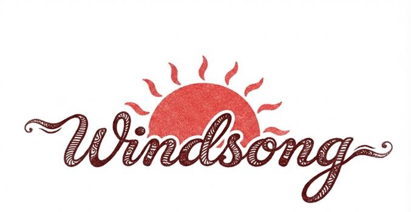
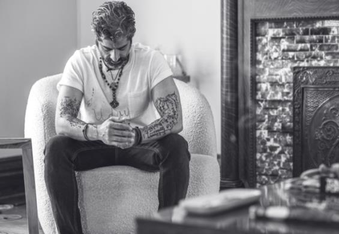
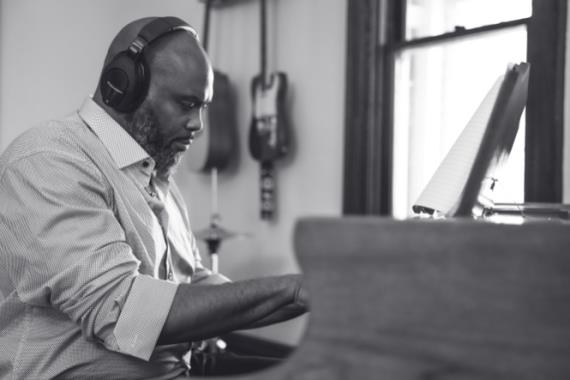
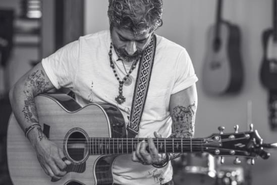
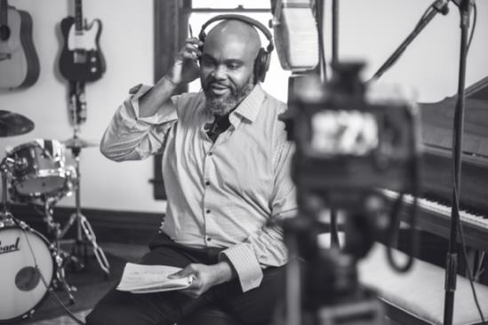
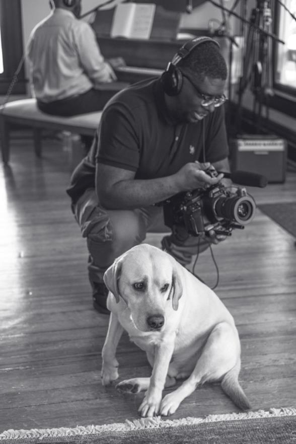
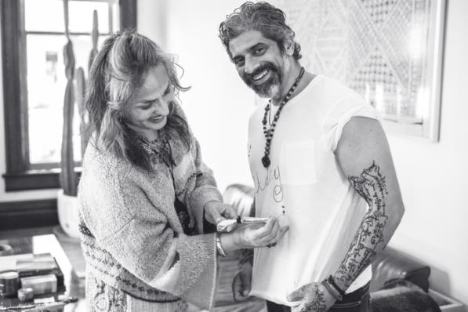
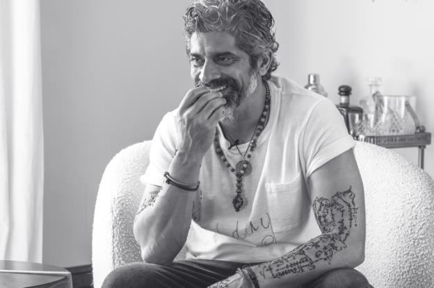

WINDSONG is a Nashville-based indie band with roots in rock, blues, gospel, and classical music. Uday Sehgal and Brandon Alexander — both addicts in recovery — founded the group in 2023 after becoming friends at treatment in Tennessee. In an effort to heal, they began playing music together every night on the back patio of Windsong, the rehab house where they met and roomed together.
UDAY SEHGAL is an entrepreneur with a background in hotels, film and music. He was raised in Chicago, IL and grew up playing guitar in bands through high school and college. He began writing songs at 18 years old. Uday studied mathematics at Northwestern University.
BRANDON ALEXANDER grew up in Nashville, TN. He was first exposed to music through church — playing piano, organ, and singing in the choir. Brandon went on to study at Fisk University, and was a member of the prestigious Fisk Jubilee Singers. He is the grateful husband of his loving wife, and proud father of their 4-year old daughter.
JOHN MASON is a session bass player and has toured with Darius Rucker for 18 years.
JOE TRAVERS plays drums and won a Grammy for live performance with the Zappa Band. He also toured with Joe Satriani and played Royal Albert Hall in London.
LACY ROSTYAK is a conservatory-trained concert violinist with recording experience alongside Shania Twain and Deadmau5.
RAVI RAO is a Chicago-based blues guitar player heavily influenced by Stevie Ray Vaughan and Jimi Hendrix.
JEFF KITE is a producer, guitar and keyboard player who tours with The Voidz (Julian Casablanca) and Cigarettes After Sex.


My parents were raised in an ashram, a spiritual community in southern india, founded by Sri Aurobindo and Mira Alfassa, also known as The Mother. They wrote volumes on the nature of man, evolution of consciousness, integral yoga, and spiritual life. One of the seminal works is called 'The Life Divine' which I've always been drawn to. My folks later immigrated to Chicago, where my brother and I were born and raised. I was given the name Uday, by the ashram's caretaker, which in Sanskrit translates to sunrise.
I was diagnosed with bipolar II twenty years ago, and later developed a substance use disorder. After treatments and relapses, I have tried and failed my way to a clean healthy daily life. They are both progressive illnesses, that is, things tend to get worse over time — if you don't get better first. I came to characterize my addiction as the manifestation of a toxic relationship. Starts good, ends bad, and ultimately a radioactive way to cope. I can't quite compare the experience to anything else — the chaos and destruction of being brought to your knees by a drug. I wrote this to remind myself of the nature of the beast, who patiently waits at the door.
My many experiences with depression have more in common than apart, characterized largely by an absolute eradication of my own will — to move, think, feel, or consider a future. That which you need most in the moment, is exactly what is not available. There is no ability to recognize a way forward, much less any point. I have noticed however, this too does pass. And what lies on the other side, once the pain becomes your ally, may actually be worth the walk.
It is said the final step of recovery is a spiritual awakening. I am looking forward to that moment. Truly on the edge of my seat.


I met Baker in treatment, we happened to cross over on both of our stays. He suffered intense early age trauma, and grew up in an environment of drug abuse. Baker regularly cut school in favor of the skate park, and on certain occasions, a jail cell. After a long journey, he is living a clean life for the first time. He likes to write poetry as his creative outlet, and provided these lyrics for me, as a record of his struggle.
My first experience with tragedy and loss was in high school. One of my best friends was out driving late at night with his mother, a vibrant and caring single mom of two. They got into a car crash, which she did not survive. It is one of those moments that still occurs in slow motion for me, with profound emotion, and gut wrenching to this day. I wrote the song when I was 18. It is dedicated to the incredibly loving memory of Linda Lee Lawrence.
I have a tight group of friends from growing up together. One of them is named Scott, a loving father of three, and an avid enthusiast of the Chicago Cubs and early 90's hip hop. After a high conflict divorce, job loss and subsequent battles with intense depression, Scott took his life. It was Thanksgiving day, just hours after we all were together with him. It is a very painful pill to swallow, in part, as it happened on our watch. The song is called 'close your eyes' — I would like to say it's a celebration of Scott, but in truth, it is an expression of pain and absence.
My best friend from childhood is named Linda. We grew up together on the same street, would constantly walk around the mall, and talk on the phone even after we'd just been hanging out doing nothing. As we moved through high school and college, and she formed relationships with guys that I felt to be under-qualified for the position, she knew where I stood. Then she met Zac, her now husband, and the father of their two boys. He and I always got along great, several shared interests, particularly we both love Linda. Zac has always been kind, friendly, authentic; and extremely hospitable. We wrote this one for him. He, even while battling ALS, is the most courageous guy I know.

A feature documentary film of the recording sessions, song backstories, and interview footage is currently in post production — with an August 2026 release date. The film was produced by CLJ Films and directed by Joseph Garner (Joker, Joker 2).
Logline: Two addicts meet in treatment, start writing music together, and record an album to explore the roots of pain and healing.

